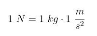
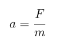

Se llama Segunda Ley de Newton o Principio Fundamental de la Dinámica al segundo de los postulados teóricos que realizó el científico británico sir Isaac Newton (1642-1727) basándose en los estudios previos de Galileo Galilei y René Descartes.
Tal y como su Ley de la Inercia, fue publicada en 1684 en su obra Principios matemáticos de filosofía natural, una de las obras fundamentales del estudio moderno de la física. Esta ley expresa, en palabras del científico en latín:
“Mutationem motus proportionalem esse vi motrici impressæ, & fieri secundum lineam rectam qua vis illa imprimitur”
Lo que significa: “El cambio de movimiento es directamente proporcional a la fuerza motriz impresa y ocurre según la línea recta a lo largo de la cual aquella fuerza se imprime”.
Esto significa que la aceleración que un cuerpo determinado experimenta es proporcional a la fuerza que sobre él se imprime, que puede o no ser constante. La esencia de lo propuesto por esta segunda ley tiene que ver con la comprensión de que la fuerza es la causa del cambio de movimiento y velocidad.
La Segunda Ley de Newton del Movimiento, también conocida como el Principio Fundamental de la Dinámica, establece la relación crucial entre la fuerza que actúa sobre un objeto, la masa de ese objeto y la aceleración resultante. A diferencia de la primera ley que describe lo que sucede en ausencia de fuerzas netas, la segunda ley explica lo que ocurre cuando sí existe una fuerza neta desequilibrada: el objeto cambia su velocidad, es decir, acelera.
La ley se puede resumir en la famosa ecuación matemática: (F = m . a). En esta fórmula, F representa la fuerza neta (la suma de todas las fuerzas vectoriales que actúan sobre el cuerpo), m es la masa del objeto y a es la aceleración que experimenta.
Esta relación implica dos proporcionalidades clave:
- Proporcionalidad directa entre fuerza y aceleración: Cuanto mayor sea la fuerza neta aplicada a un objeto, mayor será su aceleración. Si duplicamos la fuerza, duplicamos la aceleración, asumiendo que la masa se mantiene constante.
- Proporcionalidad inversa entre masa y aceleración: Cuanto mayor sea la masa de un objeto (su inercia), menor será la aceleración que produce la misma fuerza aplicada. Se necesita una fuerza mucho mayor para mover objetos más pesados con la misma aceleración que los objetos ligeros.

Fórmula de la segunda ley de Newton
La fórmula de la segunda ley de Newton establece que la fuerza aplicada sobre un cuerpo es directamente proporcional a la aceleración que adquiere dicho cuerpo. Siendo la masa del cuerpo la constante de proporcionalidad que relaciona la aceleración con la fuerza aplicada.
De modo que la expresión algebraica de la segunda ley de Newton es:
Donde:
- F es la fuerza total que actúa sobre el cuerpo o sistema. La unidad de medida de la fuerza en el Sistema Internacional es el newton (N).
- m es la masa del cuerpo o sistema, su unidad de medida en el Sistema Internacional son los kilogramos (kg).
- a es la aceleración que adquiere el cuerpo o sistema, que en el Sistema Internacional se mide en metros partido por segundo al cuadrado (m/s2).
Ten en cuenta que para que se cumpla la ecuación de la segunda ley de Newton se deben expresar todos los números en el Sistema Internacional. 
Ejemplos de como usarla
Si sobre un objeto de 25 kg se ha aplicado una fuerza de 145 N, ¿qué aceleración ha adquirido dicho objeto?
Para solucionar este problema tenemos que utilizar la fórmula de la segunda ley de Newton, que es:
Ahora despejamos la aceleración de la fórmula:
Tanto la fuerza como la masa están expresadas en el Sistema Internacional de Unidades, por lo que solo nos queda sustituir los datos en la fórmula y hacer el cálculo de la aceleración:

En conclusión, la segunda ley de Newton es el principio fundamental de la dinámica, proporcionando las herramientas cuantitativas para predecir cómo se moverán los objetos en respuesta a las fuerzas que actúan sobre ellos, y sirve como base para una gran parte de la física y la ingeniería modernas.